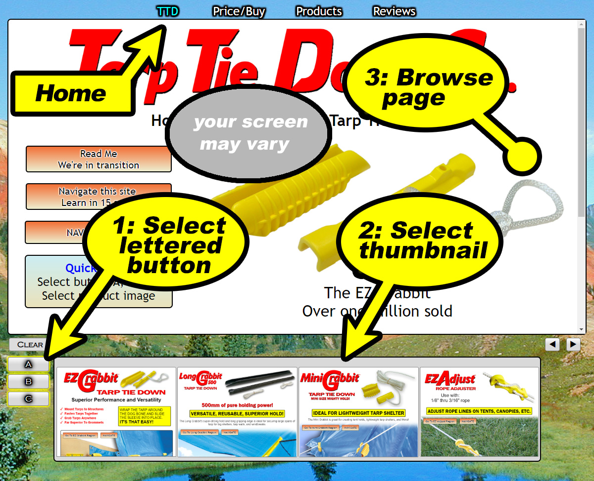

Top Menu:
The menu along the top is general information.
Lettered Button Menu:
The lettered button menu and thumbnails focus on the various products, product details
including product discussion, applications, instructions, specifications, etc.
NAVIGATE / NAVIGATE MAP Button
The NAVIGATE and/or NAVIGATE MAP button opens a list of the the various
categories and contents of the various choices. Generally, you are never more
than a two or three selections away from all content on this site.
